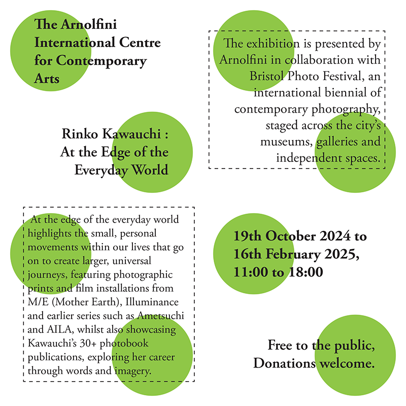
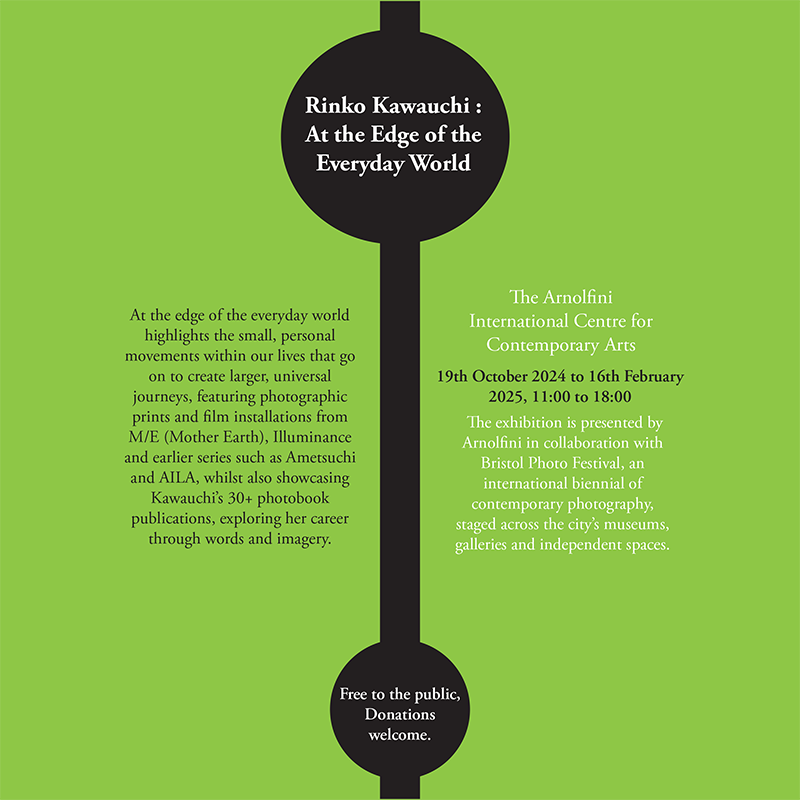
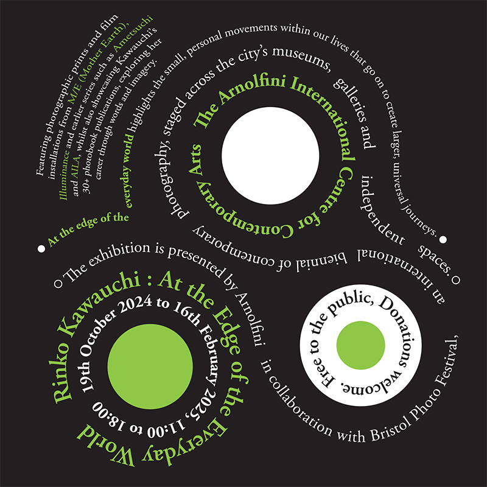
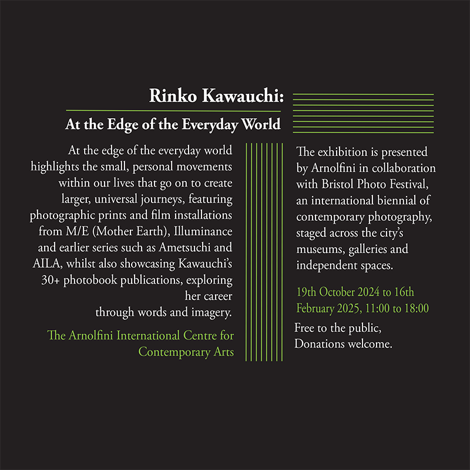
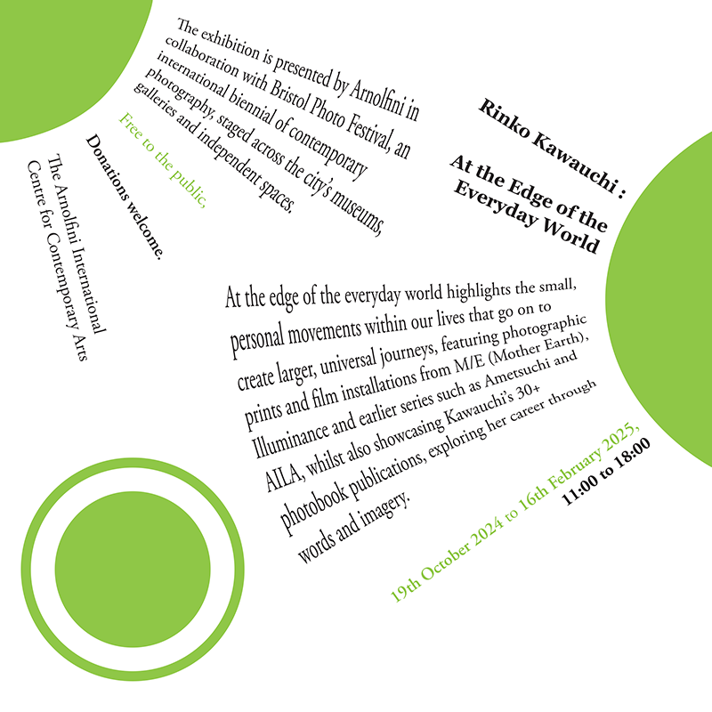
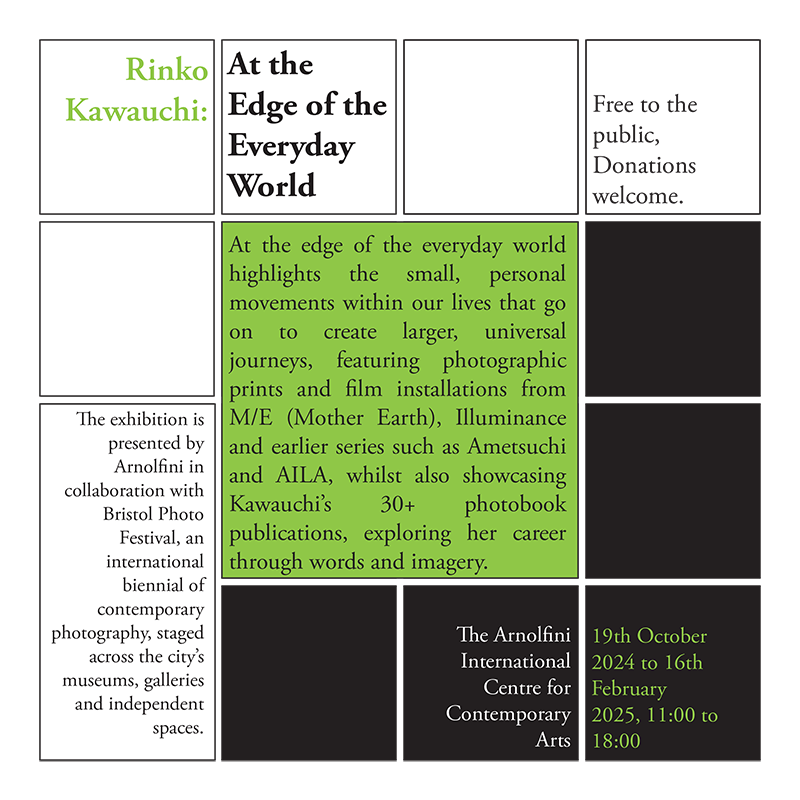
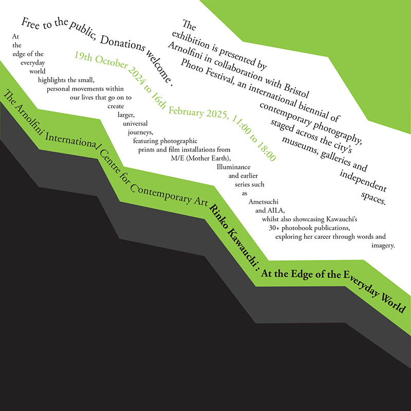
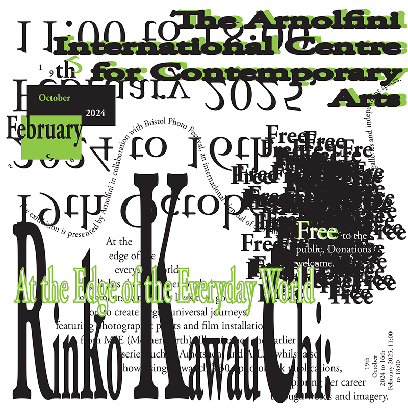

Typographic Systems: Research & Design
Yesterday evening I went to Wagamamas with my friends the celebrate my birthday. I looked down at the brighly coloured placement mats covered in pictures of mouthwatering food - and lo and behold dilatational text !! I excitedly shared my discovery with my friends, pointing out the swirls of text wrapping in and around the circular bowls of chicken noodle soup, only to realise that this was not perhaps as exciting to everyone else... but here you can explore ny interpretations of axial, radial, dilatational, bilateral, random, transitional, grid and modular typography.
Click on the images for a closer look!!
modular
{kind=link}
a modular system includes repeating structures to break up content - I choose to
repeat green circles as I thought they looked asthetically pleasing,
and allowed the information on the poster to be grouped and spread out and uneasy to read way.
I think I could have added in somewhat black elements to break up the area a bit more and add interest.
bilateral
{kind=link}
this system is about balance. I chose to centralize a black stroke to provide a
central point for the text to sit either side. I use some different colors to break up the content
and highlighted some key pieces of information by placing them into the circles. I think aligning the text towards the centre line
would have improved the appearance of this system.
dilatational
{kind=link}
this system was probably the most challenging to complete. The text on a path tool was one of the more tricky tools to
master. I wanted to preserve circular paths and movement typical to dilatational style, while also making this poster flow in way
that is easier for the viewer to navigate.
axial
{kind=link}
this is one of the more simple poster designs, but I like it because the information is
very easy for the viewer to extract. It's simple to create hierarchy in an axial poster as titles and more important text
can be placed at the top or highlighted with a larger font, and there aren't many distracting elements to take away from this
as it is a linear design.
radial
{kind=link}
radial systems have a central focal point, from which content radiates out. This design was also challenging,
as the text had to be manipulated through rotations and envelope distortion to curve around the circles and
create that radiating effect similar to the sun's rays. I think this design could be improved by adding more
colours to increase the contrast and visual interest.
grid
{kind=link}
all texts and graphics fit neatly into rows and columns in this system. I think the larger square of text in the center
makes it easier to find the information, although in general I find the style to be one of the less interesting.
I think the use of color helps to divide the grid into sections, increasing readability.
transitional
{kind=link}
I wanted this poster to appear like layers of the earth or mountains, with flowing texts that
continues slashf follows this shape. I tried choosing different orientations of text, as well as text on a path and in a shape.
I did this to avoid it looking too bland, but I am not sure it was effective, as I think it just looks incohesive,
so this is something I might change in the future.
random
{kind=link}
there's not really other way to explain this system - it's just very very random.
I was confused on how to tackle this originally. It's hard to know how random is too random.
In the end I gave myself no limits. I think this style is d definitely eye catching and attention grabbing,
but makes it difficult to deliver large amounts of information to the viewer.